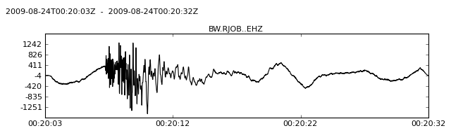
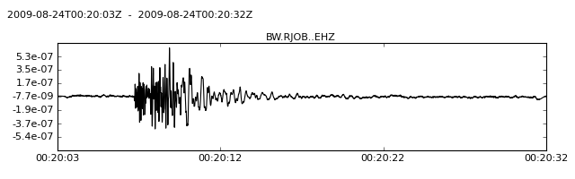

Correct for instrument response / Simulate new instrument response.
| Parameters: |
|
|---|
This function corrects for the original instrument response given by paz_remove and/or simulates a new instrument response given by paz_simulate. For additional information and more options to control the instrument correction/simulation (e.g. water level, demeaning, tapering, ...) see seisSim().
paz_remove and paz_simulate are expected to be dictionaries containing information on poles, zeros and gain (and usually also sensitivity).
If both paz_remove and paz_simulate are specified, both steps are performed in one go in the frequency domain, otherwise only the specified step is performed.
Note
This operation is performed in place on the actual data arrays. The raw data is not accessible anymore afterwards. To keep your original data, use copy() to create a copy of your trace object. This also makes an entry with information on the applied processing in stats.processing of this trace.
Example
>>> from obspy import read
>>> from obspy.signal import cornFreq2Paz
>>> st = read()
>>> tr = st[0]
>>> tr.plot()
>>> paz_sts2 = {'poles': [-0.037004+0.037016j, -0.037004-0.037016j,
... -251.33+0j,
... -131.04-467.29j, -131.04+467.29j],
... 'zeros': [0j, 0j],
... 'gain': 60077000.0,
... 'sensitivity': 2516778400.0}
>>> paz_1hz = cornFreq2Paz(1.0, damp=0.707)
>>> paz_1hz['sensitivity'] = 1.0
>>> tr.simulate(paz_remove=paz_sts2, paz_simulate=paz_1hz)
>>> tr.plot()

